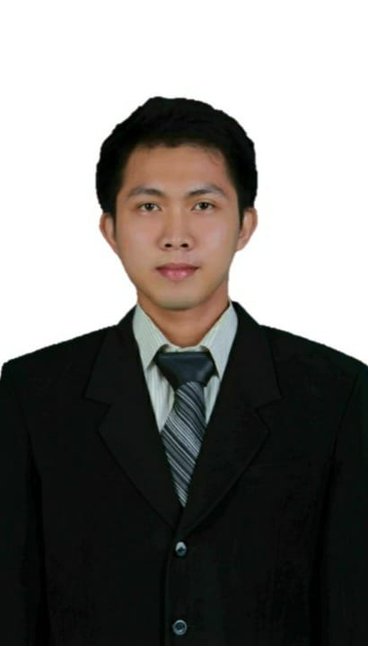

Herfando

Summary
Aimed at becoming professionals in the manufacturing industry who
need management, problem solving, and organization
Education
- Bachelor Degree of Mechanical Engineering
UNJANI Bandung (2008-2012)
Work Experience
Plant Manager - PT Porto Indonesia Sejahtera
(2024-Current)
- Morning meeting with PPIC, Production, Quality,
Engineering, Rnd, Warehouse, and HRGA for make problem
solving in ther factory.
- Weekly and monthly presentage of factory processes to
owner.
- Every 2 weeks a presentation about innovation in the
factory to owner.
- Create an employee self development system in the
factory
- Responsible for all activities in the factory.
Production Head - PT. Suryasukses Adi Perkasa
(2022-2024)
- Daily meeting with supervisor for anaysis problem
production.
- Make improvement for achive production and quality
target.
- Control 5R and small group activity.
Skills
- HTML, CSS, Javascript, Boothstrap, Node.js, SQL, React.js, Web3 Decentralised App
Certification
- Lean Six Sigma at productiivity academy, on March 21th 2021
- Productivity 100% achievment at PT Hankook Tire Indonesia, January
until December 2020
Other